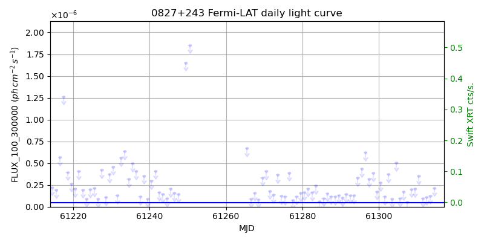
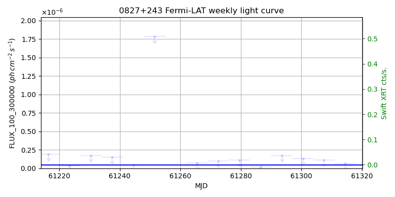
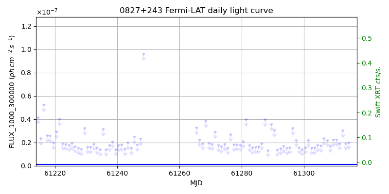
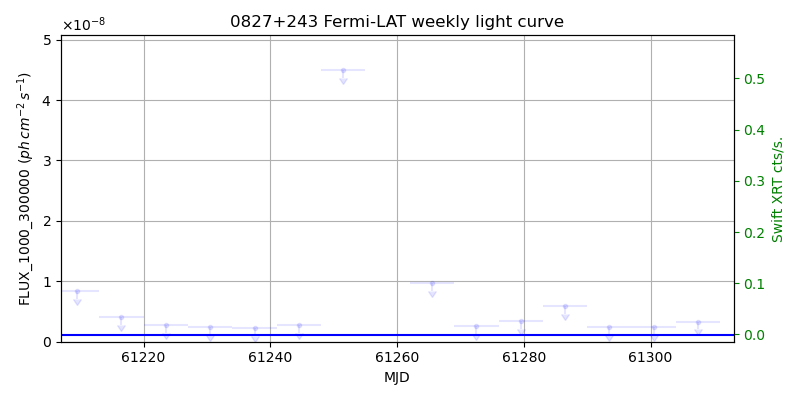

LAT Lightcurve site: https://fermi.gsfc.nasa.gov/ssc/data/access/lat/msl_lc/source/0827p243
Swift site: https://www.swift.psu.edu/monitoring/source.php?source=QSOB0827+243
NED: Query
Time of last update of this page: UT: 2026-10-10 15:20 (MJD: 61323.639)
| Property | Value |
|---|---|
| R.A. | 8:29:57.60 |
| Dec. | 24:13:12.0 |
| z | 0.939 |
| 3FGL SpectrumType | PowerLaw |
| 3FGL PL Index | 2.63 |
| 3FGL Flux_100_300000 | 4.63e-08 1 / (s cm2) |
| 3FGL Flux_1000_300000 | 1.09e-09 1 / (s cm2) |
| 3FGL Flux >200 GeV | 1.97e-13 1 / (s cm2) |
| 3FGL Extrap. Crab >200 GeV | 0.00 |
| 3FGL Flux After EBL Absorption >200GeV | 4.48e-15 1 / (s cm2) |
| 3FGL EBL Crab Fraction >200GeV | 0.00 |

| MJD | dMJD | Flux | dFlux | Frac3FGL | FracCrab>200GeV | EBLFracCrab>200GeV |
|---|---|---|---|---|---|---|
| 61318.50 | 0.50 | 1.30e-07 | 0.00e+00 | 0.00 | 0.00 | 0.00 |
| 61319.50 | 0.50 | 1.59e-07 | 0.00e+00 | 0.00 | 0.00 | 0.00 |
| 61320.50 | 0.50 | 1.59e-07 | 0.00e+00 | 0.00 | 0.00 | 0.00 |
| 61321.50 | 0.50 | 7.92e-08 | 0.00e+00 | 0.00 | 0.00 | 0.00 |
| 61322.50 | 0.50 | 9.14e-08 | 0.00e+00 | 0.00 | 0.00 | 0.00 |

| MJD | dMJD | Flux | dFlux | Frac3FGL | FracCrab>200GeV | EBLFracCrab>200GeV |
|---|---|---|---|---|---|---|
| 61286.50 | 3.50 | 2.03e-08 | 0.00e+00 | 0.00 | 0.00 | 0.00 |
| 61293.50 | 3.50 | 1.73e-07 | 0.00e+00 | 0.00 | 0.00 | 0.00 |
| 61300.50 | 3.50 | 1.34e-07 | 0.00e+00 | 0.00 | 0.00 | 0.00 |
| 61307.50 | 3.50 | 1.13e-07 | 0.00e+00 | 0.00 | 0.00 | 0.00 |
| 61314.50 | 3.50 | 6.73e-08 | 0.00e+00 | 0.00 | 0.00 | 0.00 |

| MJD | dMJD | Flux | dFlux | Frac3FGL | FracCrab>200GeV | EBLFracCrab>200GeV |
|---|---|---|---|---|---|---|
| 61318.50 | 0.50 | 2.23e-08 | 0.00e+00 | 0.00 | 0.00 | 0.00 |
| 61319.50 | 0.50 | 1.63e-08 | 0.00e+00 | 0.00 | 0.00 | 0.00 |
| 61320.50 | 0.50 | 3.86e-08 | 0.00e+00 | 0.00 | 0.00 | 0.00 |
| 61321.50 | 0.50 | 9.66e-09 | 0.00e+00 | 0.00 | 0.00 | 0.00 |
| 61322.50 | 0.50 | 1.07e-08 | 0.00e+00 | 0.00 | 0.00 | 0.00 |

| MJD | dMJD | Flux | dFlux | Frac3FGL | FracCrab>200GeV | EBLFracCrab>200GeV |
|---|---|---|---|---|---|---|
| 61286.50 | 3.50 | 5.92e-09 | 0.00e+00 | 0.00 | 0.00 | 0.00 |
| 61293.50 | 3.50 | 2.40e-09 | 0.00e+00 | 0.00 | 0.00 | 0.00 |
| 61300.50 | 3.50 | 2.42e-09 | 0.00e+00 | 0.00 | 0.00 | 0.00 |
| 61307.50 | 3.50 | 3.31e-09 | 0.00e+00 | 0.00 | 0.00 | 0.00 |
| 61314.50 | 3.50 | 2.74e-09 | 0.00e+00 | 0.00 | 0.00 | 0.00 |
--------------------------------------------------------- Using user-supplied coords: 8:29:57.60 24:13:12.0 2000 --------------------------------------------------------- FLWO UT night of: 2026-10-11 Local Sid. @ Midnight: 00:55 Sunset (-15.0) (local, UT): 19:04 02:04 Sunrise (-15.0) (local, UT): 05:18 12:18 Moonrise (local, UT): Moonset (local, UT): Moon phase: 0.01 --------------------------------------------------------- AzTime LSID UT Obj_el Obj_az Mn_el Mn_az Sep. --------------------------------------------------------- 19:04 19:58 02:04 -33.7 351.1 -16.1 264.2 78.6 19:34 20:29 02:34 -34.2 359.3 -22.3 267.8 78.9 20:04 20:59 03:04 -33.8 7.6 -28.5 271.5 79.2 20:34 21:29 03:34 -32.5 15.6 -34.7 275.4 79.5 21:04 21:59 04:04 -30.4 23.3 -40.8 279.7 79.8 21:34 22:29 04:34 -27.5 30.4 -46.8 284.6 80.1 22:04 22:59 05:04 -23.9 36.9 -52.7 290.5 80.4 22:34 23:29 05:34 -19.8 42.8 -58.4 297.7 80.8 23:04 23:59 06:04 -15.3 48.2 -63.6 307.3 81.1 23:34 00:29 06:34 -10.3 53.1 -68.1 320.3 81.5 00:04 00:59 07:04 -4.5 57.5 -71.3 338.2 81.8 00:34 01:29 07:34 0.9 61.6 -72.6 0.4 82.2 01:04 01:59 08:04 6.3 65.4 -71.5 22.7 82.5 01:34 02:30 08:34 12.2 69.0 -68.3 40.8 82.9 02:04 03:00 09:04 18.2 72.3 -63.9 54.1 83.2 02:34 03:30 09:34 24.3 75.6 -58.7 63.8 83.6 03:04 04:00 10:04 30.6 78.8 -53.1 71.2 83.9 03:34 04:30 10:34 36.9 82.1 -47.3 77.2 84.3 04:04 05:00 11:04 43.2 85.4 -41.4 82.2 84.6 04:34 05:30 11:34 49.6 89.1 -35.3 86.6 84.9 05:04 06:00 12:04 56.0 93.2 -29.2 90.6 85.3 05:18 06:14 12:18 58.9 95.3 -26.5 92.4 85.4 --------------------------------------------------------- Dark hours >55 deg.: 0.30 srcstart (UT): 2026-10-11 11:59 srcend (UT): 2026-10-11 12:17